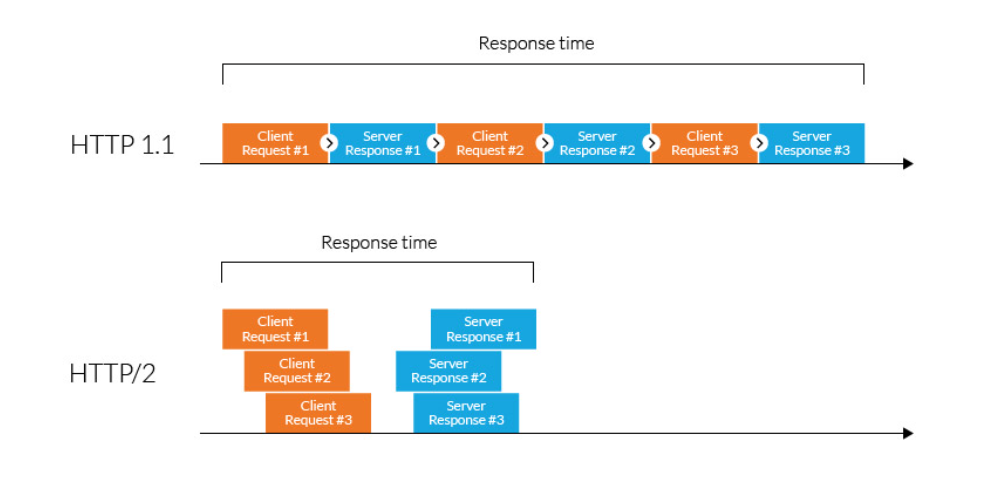

Hypertext Transfer Protocol (HTTP) is a set of standards allowing internet users to exchange website information. There have been four HTTP iterations since its introduction in 1991.
HTTP/2 was released in 2015 as a major revision to the HTTP/1.1 protocol. It was derived from the SPDY protocol as a way to improve the online experience by speeding up page loads and reducing round-trip time (RTT), especially on resource-heavy web pages.
HTTP/1.1 was the third version of HTTP and the standard protocol for over 15 years. It introduced persistent connections for improved performance and laid the foundation for standard requests, such as GET, HEAD, PUT, and POST.
As websites became more resource-intensive, however, HTTP/1.1’s limitations began to show. Specifically, its use of one outstanding request per TCP connection created significant overhead, slowing down page load times.
In 2010, Google released the SPDY protocol as a way of modifying how HTTP handles requests and responses. Its focus was on reducing latency via TCP pipelining and providing mandatory compression, amongst other features.
While HTTP/2 was initially modeled after SPDY, it was soon modified to include unique features, including a fixed header compression algorithm, (in contrast to SPDY’s dynamic stream-based compression). Following its release, Google announced that it would remove support for SPDY in favor of HTTP/2.
HTTP/2 improved on HTTP/1.1 in a number of ways that allowed for speedier content delivery and improved user experience, including:
